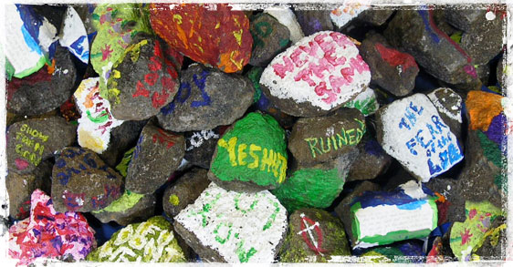

Youth With A Mission (YWAM) is an international movement of Christians from many denominations dedicated to presenting Jesus personally to this generation, to mobilizing as many as possible to help in this task, and to the training and equipping of believers for their part in fulfilling the Great Commission. As citizens of God's kingdom, we are called to love, worship, and obey our Lord, to love and serve His Body, the Church, and to present the whole gospel for the whole person throughout the whole world.
We of Youth With A Mission believe that the Bible is God's inspired and authoritative word, revealing that Jesus Christ is God's son; that people are created in God's image; that He created us to have eternal life through Jesus Christ; that although all people have sinned and come short of God's glory, God has made salvation possible through the death on the cross and resurrection of Jesus Christ; that repentance, faith, love and obedience are fitting responses to God's initiative of grace towards us; that God desires all people to be saved and to come to the knowledge of the truth; and that the Holy Spirit's power is demonstrated in and through us for the accomplishment of Christ's last commandment, "Go ye into all the world and preach the gospel to every creature" (Mark 16:15).
YWAM’s Core Beliefs
Youth With A Mission (YWAM) affirms the Bible as the inspired and authoritative word of God and, with the Holy Spirit’s guidance, the absolute reference point for every aspect of life and ministry. Based upon God’s word, who He is, and His initiative of salvation, through the atoning work of Jesus (His death, burial and resurrection), the following responses are strongly emphasized in YWAM:
• Worship: We are called to praise and worship God alone (Ex 20:2-3; Deu 6:4-5; 2Ki 17:35-39; 1Ch 16:28-30; Neh 8:2-10; Mar 12:29-30; Rom 15:5-13; Jud 24-25; Rev 5:6-14; Rev 19:5-8).
• Holiness: We are called to lead holy and righteous lives that exemplify the nature and character of God (Lev 19:1-2; Psa 51:7-11; Jer 18:1-11; Eze 20:10-12; Zec 13:9; Luk 1:68-75; Eph 4:21-32; Tit 2:11-14; 1Pe 2:9,21-25; 1Jo 3:1-3).
• Witness: We are called to share the Gospel of Jesus Christ with those who do not know Him (Psa 78:1-7; Isa 40:3-11; Mic 4:1-2; Hab 2:14; Luk 24:44-48; Act 3:12-26; Act 10:39-43; 1Co 9:19-23; 2Co 2:12-17; 1Pe 3:15-18).
• Prayer: We are called to engage in intercessory prayer for the people and causes on God’s heart, including standing against evil in every form (Gen 18:20-33; Exo 32:1-16; Jdg 3:9,15; 1Ki 8:22-61; Eze 22:30-31; Eze 33:1-11; Mat 6:5-15; Mat 9:36-38; Eph 3:14-21; 2Th 3:1-5).
• Fellowship: We are called to commit to the Church in both its local nurturing expression and its mobile multiplying expression (2Ch 29:20-30; Psa 22:25-28; Psa 122:1-4; Joe 2:15-17; Mat 18:19-20; Act 2:44-47; Act 4:32-35; 1Co 14:26-40; Eph 2:11-18; Heb 10:23-25).
• Service: We are called to contribute toward God’s Kingdom purposes in every sphere of life (Deu 15:7-11; Deu 24:17-22; Psa 112:4-9; Pro 11:10-11; Zec 7:8-10; Mat 5:14-16; 2Th 3:13; Tit 3:4-8; Heb 13:15-16; Jam 2:14-26).
What Is YWAM? Who We Are Who Leads Us Foundational Values FAQ's Vancouver Declaration YWAM Canada News
YWAM International University Of The Nations YWAM Life YWAM Vancouver YWAM Connect YWAM Organic YWAM City International YWAMer Member Care Resources YWAM Associates International Mission Builders International Global Target Network Create - Emerge The Cost of Community In Touch E-zine
“I like to help God out as much as possible.
You do the possible, He’ll do the impossible.”
- Loren Cunningham (YWAM Founder)